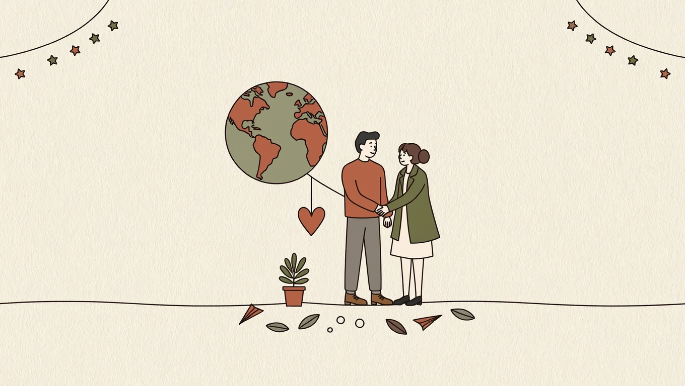
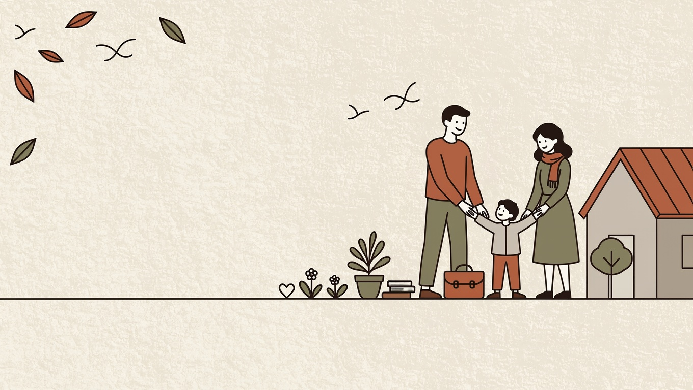
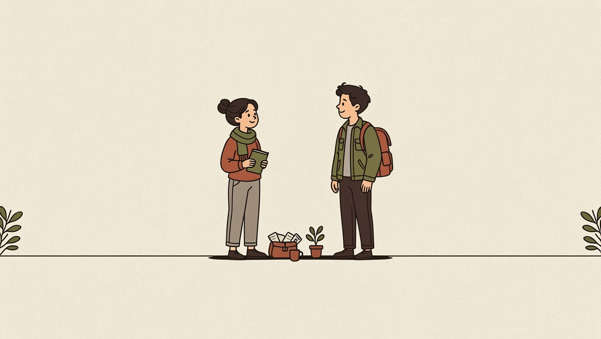
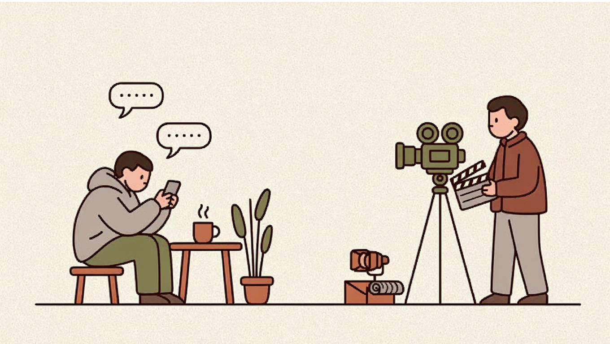
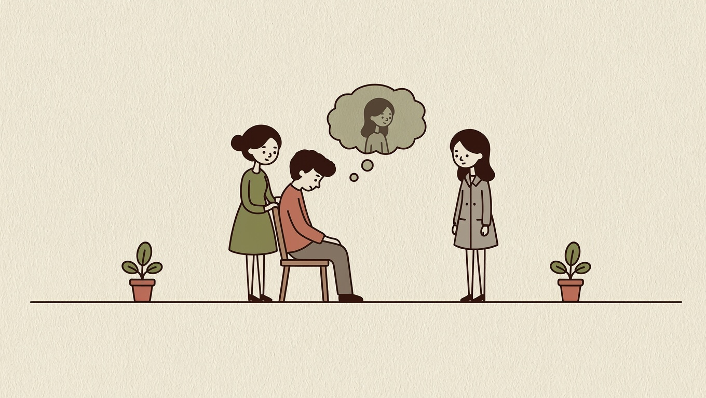
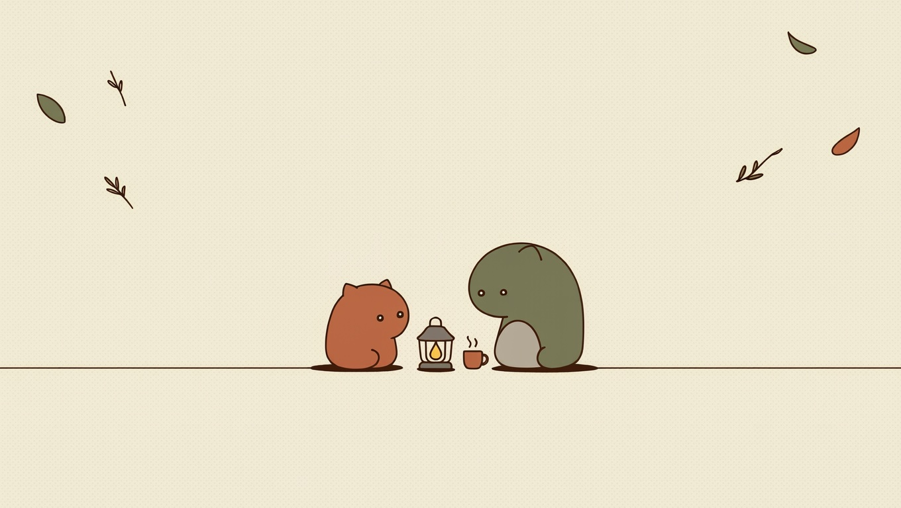

Tôi rung động với cô gái khác khi sắp cưới người yêu 17 năm

Tôi biết mình yêu vợ sắp cưới - người cùng mình có 17 năm đi cùng nhưng vẫn tham lam muốn nhắn tin với bạn kia.

Tôi 35 tuổi, đã có bạn gái.
Chúng tôi học chung với nhau, yêu nhau tới nay cũng 17 năm, là mối tình đầu của nhau, cùng du học Mỹ.
Sau đó em ở lại làm việc, tôi học tiếp lên Tiến sĩ ở châu Âu, trở về Việt Nam công tác tại một trường đại học và mở doanh nghiệp riêng.
Do tính chất công việc, em ở Mỹ ít về được Việt Nam nên tôi thường tranh thủ các chuyến công tác qua thăm em một năm khoảng 4-5 lần.
Tình cảm chúng tôi rất tốt, ai nhìn vào cũng thấy đẹp đôi.
Đối với tôi, em rất hoàn hảo, thương người, thương động vật, tình cảm, biết chăm lo vun vén cho gia đình hai bên, thông minh, rất giỏi chuyên môn, ngoại hình xinh đẹp.
Lúc chúng tôi học cấp ba, em là hoa khôi của trường, nhà có điều kiện, là con của chủ doanh nghiệp lớn, rất nổi tiếng ở thành phố.

Còn tôi chỉ là con nhà nghèo, ít nói, sống nội tâm, chỉ biết học, nói chuyện lại nhạt nhưng em bỏ qua tất cả những anh chàng nhà giàu, học giỏi, có điều kiện mà yêu tôi rất nhiều.
Em lúc nào cũng hỏi vui tôi là em có tầm nhìn xa không, ngày trước tôi không có gì, bỏ qua bao nhiêu người thích em nhưng em vẫn nhất quyết yêu tôi tới tận bây giờ để có được thành quả như hôm nay.
Hai đứa rất hợp nhau từ công việc, địa vị, tư duy tới ngoại hình.
Chúng tôi dự tính và tôi đã xin phép gia đình hai bên cho cưới em vào đầu năm 2027 và về ở với nhau.
Ưu tiên công việc của tôi nên em sẽ về Việt Nam luôn vì tuổi chúng tôi đã lớn, không thể yêu xa mãi được và em cũng muốn có em bé sớm.
Em sẽ về để kế thừa sản nghiệp của tập đoàn gia đình em.
Ba em rất vui vì em chịu về Việt Nam.

Mọi kế hoạch đã được lên hết từ việc ở đâu, sinh con, mua nhà mới, quản lý công ty như nào, chăm sóc gia đình hai bên như nào.
Đối với tôi, em là người quan trọng nhất trong cuộc đời, không ngại gian khó ở bên tôi trong những lúc khó khăn nhất.
Mỗi lần ôm em ngủ là dù sóng gió ngoài kia như nào cũng thấy bình yên.
Dù tôi được rất nhiều cô gái thích và tiếp cận nhưng tôi cứ yêu em như vậy 17 năm qua, chưa một lần rung động với bất kỳ ai.
Cả cuộc đời tôi chỉ nhìn và đưa ánh mắt vào đúng một mình em.
Cho tới 5 tháng trước, khoảng tháng 6/2026, tôi có tham gia một hoạt động thiện nguyện do tổ chức quốc tế tôi tham gia tổ chức.
Tại đây tôi gặp một bạn ca sĩ, diễn viên có tiếng ở Việt Nam.

Chúng tôi có cho nhau liên lạc để trao đổi một số việc trong chuyến thiện nguyện đó và từ lúc nào đó chúng tôi bị cuốn vào nói chuyện với nhau.
Điều mà tôi chưa từng có cảm giác với ai ngoại trừ vợ sắp cưới của mình.
Tôi không quan tâm showbiz nhưng khi nói chuyện với nhân viên của mình, tôi được biết bạn có nhiều fan hâm mộ, nhắc tới tên sẽ nhiều người biết.
Tôi và bạn nhắn tin không nhiều do lịch trình cả hai đều rất bận, một ngày khoảng 2-3 tin.
Có đêm nào bạn về sớm được, chúng tôi sẽ gọi điện thoại nói chuyện tới 2-3 giờ sáng.
Nội dung chủ yếu nói về công việc, lịch trình của bạn.
Tôi không biết bạn có tình cảm gì với tôi không hay chỉ coi tôi là một người bạn nói chuyện bình thường nhưng trong lòng tôi chẳng biết từ bao giờ đã mong tin nhắn của một người con gái khác ngoài người yêu mình.

Có những ngày bạn bận quay phim không nhắn cho tôi cả hai ngày.
Tôi đợi, nhấn vào phần nói chuyện hoài.
Bạn nói khi nào rảnh thì tôi đưa bạn đi ăn nhưng tôi luôn từ chối, lấy cớ bận việc vì tôi sợ làm điều có lỗi với người yêu.
Tôi cũng không quen nói dối là đi ăn với bạn mà nói đi với đối tác.
Tôi và bạn đều không nói về chuyện riêng của đối phương.
Tôi không biết bạn có người yêu hay chưa, bạn cũng vậy, không biết tôi đã có người yêu hay gia đình chưa.
Bạn cũng không đòi hỏi tôi làm gì, chỉ đơn giản là những tin nhắn hỏi thăm.

Cứ như vậy năm tháng trôi qua, tôi day dứt nhiều mà không kiềm chế được bản thân nghĩ về người con gái đó.
Tôi biết mình vẫn yêu vợ sắp cưới - người cùng mình có 17 năm đi cùng, mãi mãi không ai thay thế được cô ấy, nhưng vẫn tham lam muốn nhắn tin với bạn kia.
Ai đã gặp trường hợp như này, giúp tôi thoát khỏi tình cảnh này được không? Tôi muốn được trở lại bình thường, trái tim chỉ có một người duy nhất, người tôi chỉ chấp nhận duy nhất tồn tại trong trái tim mình.

Cảm ơn bạn đã lắng nghe.
Nguồn: Bài gốc